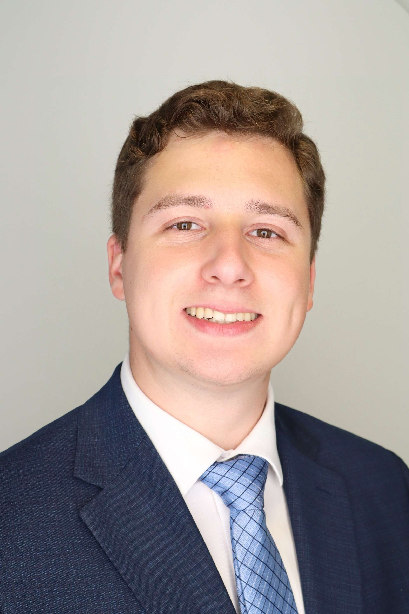

About Maxim Myshchak

Maxim Myshchak is a passionate student leader dedicated to intersecting STEM with a humanitarian focus to make a positive difference in the various communities that he is a part of.
Max has previously interned as a Software Engineer for accessibility web-design, was the first to conduct STEM outreach at his local library branch and high school, united global communities with open-source 3D designs, fabricated a wooden standing desk for NYC students with ADHD, and mobilized teams for the MIT Cre[at]e Challenge to prototype assistive devices/tech for community members diagnosed with a disability.
Max is an aspiring engineer who hopes to use his lived experiences as building blocks for making a difference in people’s lives on a larger scale. (And he is an open-source fanatic, hoping that his creations would be used around the world for all to benefit from.)
Max is always glad to talk about engineering, how to design with impact and scalability in mind, and anything in between. Reach him at maxim_myshchak[at]college.harvard.edu